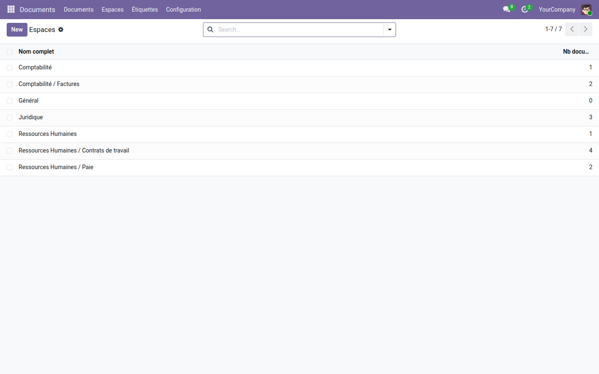
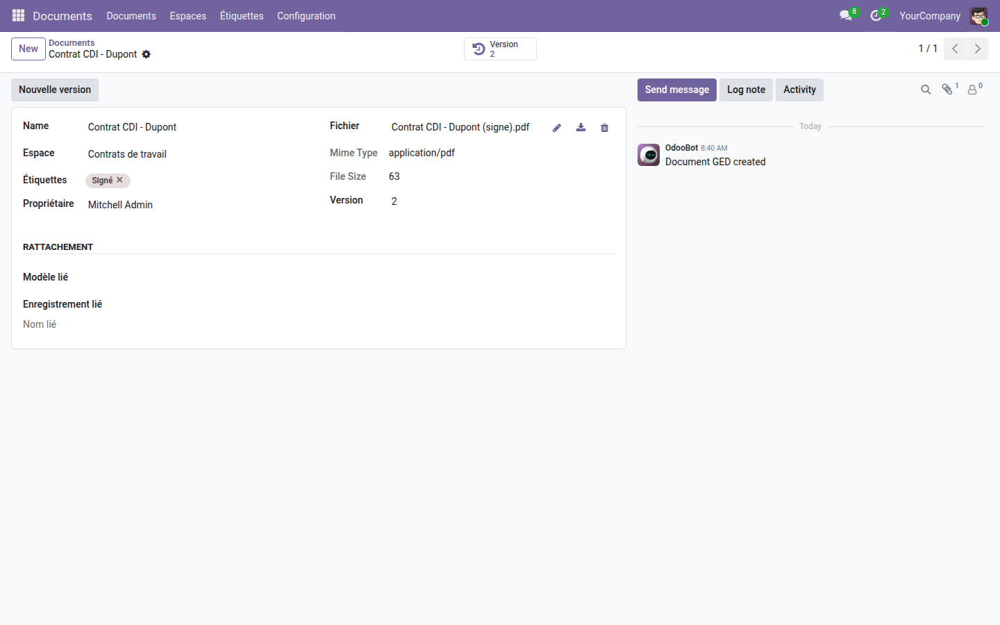
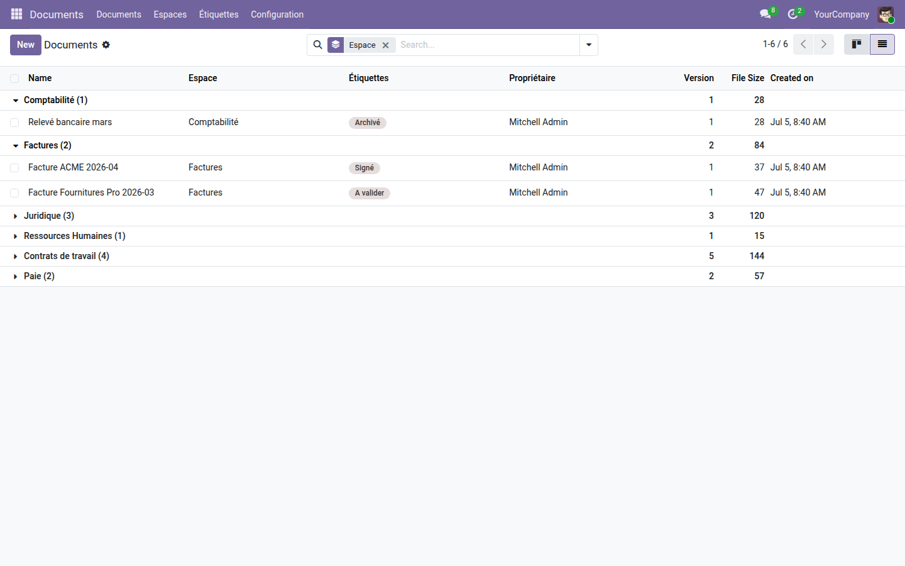

Organisez tous vos fichiers en espaces cloisonnés : versionning, aperçu, rattachement métier et droits par espace — directement dans Odoo Community.
Sur Odoo Community, les documents vivent dispersés en pièces jointes noyées dans les fiches, sans classement, sans historique de version, sans contrôle de qui voit quoi. Retrouver le bon contrat, savoir quelle est la dernière version, empêcher un service d'accéder aux pièces d'un autre : rien de tout cela n'existe nativement. La GES d'Odoo Enterprise (Documents) comble ce vide — cette application l'apporte à votre Community.
ir.attachment) et porte ses métadonnées : espace, étiquettes, propriétaire, type, taille.Des espaces cloisonnés, hiérarchiques — une arborescence claire, un compteur de documents par espace.

Le document, tout en un — aperçu du fichier, étiquettes, version, propriétaire et rattachement à l'enregistrement métier.

Tout se retrouve — vue d'ensemble regroupée par espace, avec recherche par type, étiquette et propriétaire.

Cette GED est le socle gratuit d'une suite en construction : signature électronique, dépôt client au portail et actions par espace viendront s'y brancher. Installez-la maintenant, elle s'enrichira.
Application gratuite, licence LGPL-3 — compatible Odoo 19.0 Community & Enterprise. Aucune dépendance externe. Support : support@odooskills.com.